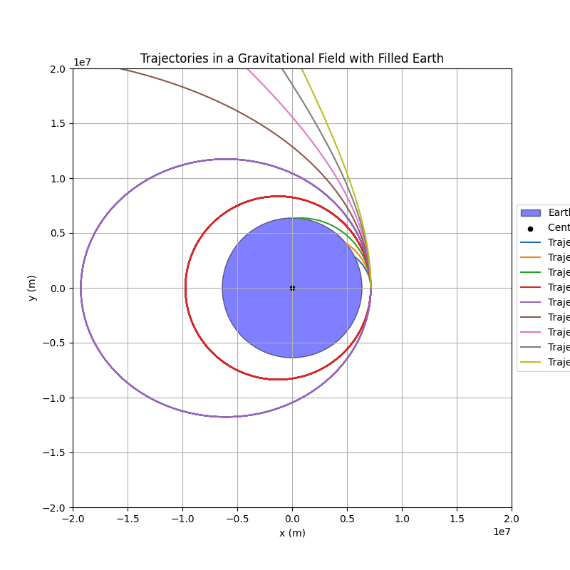

Problem 3
Trajectories of a Freely Released Payload Near Earth
Motivation
When an object is released from a moving rocket near Earth, its trajectory depends on initial conditions and gravitational forces.
This scenario presents a rich problem, blending principles of orbital mechanics and numerical methods.
Understanding the potential trajectories is vital for space missions, such as deploying payloads or returning objects to Earth.
Task
- Analyze the possible trajectories (e.g., parabolic, hyperbolic, elliptical) of a payload released near Earth.
- Perform a numerical analysis to compute the path of the payload based on given initial conditions (position, velocity, and altitude).
- Discuss how these trajectories relate to orbital insertion, reentry, or escape scenarios.
- Develop a computational tool to simulate and visualize the motion of the payload under Earth's gravity, accounting for initial velocities and directions.
Hints and Resources
- Use fundamental gravitational principles, such as Newton's Law of Gravitation and Kepler's Laws, to derive equations and analyze scenarios.
- Leverage numerical methods or software tools (e.g., Python) to simulate orbits and trajectories.
- Explore real-world applications, such as space mission planning, satellite deployment, and planetary exploration.
These tasks provide a foundation for understanding gravity's influence on motion and its role in celestial mechanics and space exploration.
Simulation Code
The following Python code simulates the motion of a payload released 800 km above Earth with varying initial speeds.
The simulation tracks the position of the payload over time under the influence of Earth's gravity, and plots the resulting trajectories.
import numpy as np
import matplotlib.pyplot as plt
# Constants
G = 6.67430e-11 # gravitational constant
M_earth = 5.972e24 # mass of Earth in kg
R_earth = 6371e3 # radius of Earth in meters
altitude = 800e3 # 800 km above surface
initial_radius = R_earth + altitude
# Simulation parameters (güncellendi)
dt = 2 # time step (s)
t_max = 30000 # total simulation time (s)
# Initial position (on the +x axis)
r0 = np.array([initial_radius, 0])
# Initial velocities (daha seyrek, daha temiz görünüm)
velocities_kms = np.arange(5, 13.5, 1.0) # km/s
velocities = velocities_kms * 1000 # convert to m/s
# Gravitational acceleration function
def gravity_acc(r):
return -G * M_earth * r / np.linalg.norm(r)**3
# Plot setup
fig, ax = plt.subplots(figsize=(8, 8))
# Draw Earth
earth = plt.Circle((0, 0), R_earth, facecolor='blue', edgecolor='black', alpha=0.5, label='Earth')
ax.add_artist(earth)
# Mark Earth's center
ax.scatter(0, 0, color='black', s=20, label='Center of Earth')
# Simulate and plot trajectories
for i, v0 in enumerate(velocities):
r = r0.copy()
v = np.array([0, v0]) # velocity in +y direction
xs, ys = [], []
for _ in range(t_max):
a = gravity_acc(r)
v += a * dt
r += v * dt
xs.append(r[0])
ys.append(r[1])
if np.linalg.norm(r) <= R_earth:
break # crash into Earth
ax.plot(xs, ys, label=f'Trajectory {i+1}')
# Final plot settings
ax.set_aspect('equal')
ax.set_xlim(-2e7, 2e7)
ax.set_ylim(-2e7, 2e7)
ax.set_xlabel('x (m)')
ax.set_ylabel('y (m)')
ax.set_title('Trajectories in a Gravitational Field with Filled Earth')
ax.legend(loc='center left', bbox_to_anchor=(1, 0.5)) # Legend'i dışarı alırsan sıkışmaz
plt.grid(True)
# Save and show plot
plt.savefig("trajectory_plot_updated.png")
plt.show()

Results and Visualizations
Simulated Payload Trajectories
This plot shows the trajectories of a payload launched from 800 km above Earth at different speeds (5–13 km/s).
Each path demonstrates how orbital type changes with increasing velocity.
Escape Velocity at 800 km Altitude
The theoretical escape velocity at 800 km above Earth's surface is:
This is the minimum speed required for an object to escape Earth's gravitational pull without further propulsion.
As seen in the plot, trajectories with speeds above this threshold result in escape paths.
Observed Trajectories Summary
| Initial Velocity (km/s) | Expected Path Type |
|---|---|
| 5.0 – 10.5 | Elliptical / returns |
| ≈ 10.9 | Parabolic (escape) |
| > 11.0 | Hyperbolic (escape) |
Deliverables
- A Markdown document with Python script or notebook implementing the simulations.
- A detailed explanation of the subjects.
- Graphical representations of orbital trajectories, escape velocities, and payload trajectories near Earth.